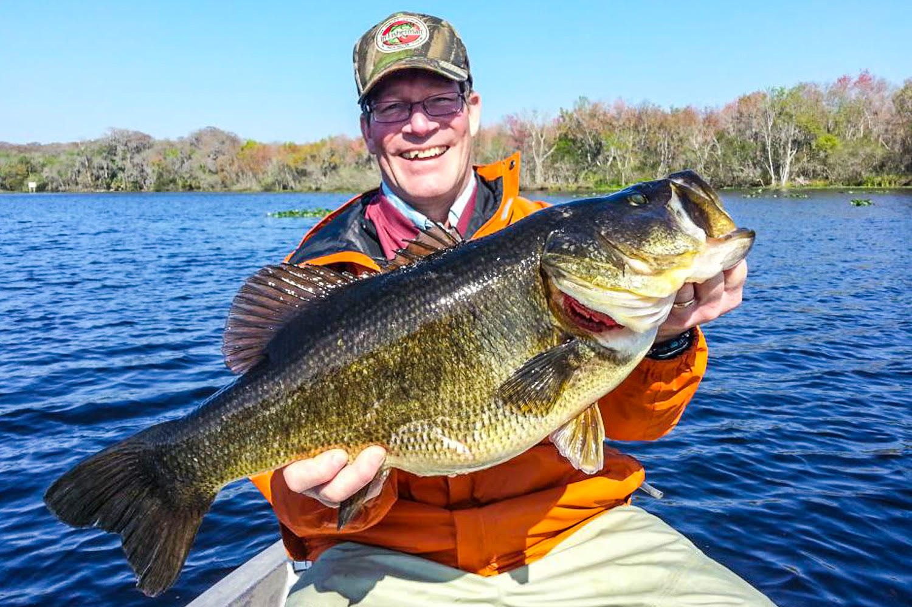

In North America, the most common game fish targeted is the Black Bass (colloquially known as the largemouth bass). The fish are found in almost every body of fresh water, so it's no wonder why anglers across the country eagerly target these fish. These fish are incredibly agressive, and are eager to eat almost anything that can fit in their mouth. These fish are know to eat frogs, mice, bluegill and even smaller members of their own species! Unlike their close relative smallmouth bass, largemouths prefer warm and still water. They will spend most of their day sitting underneath cover such as an overhanging tree. This makes it relatively easy to locate a group of bass in any body of water, as they will typically gravitate to the same enviroments. Its a smart idea to start each fishing trip with pitching a slow moving bait underneath obvious cover as you are more than likely to get a bite. 
Above: A man holding an incredibly impressive largemouth bass.


| Lure: | Type: | Image: |
|---|---|---|
| Ned-rig | Mid-water |  |
| Stickbait | Bottom-jig |  |
| Crankbait | Searchbait |  |
| Frog | Top-water |  |
Copyright © 2021, Mohamed Makouk